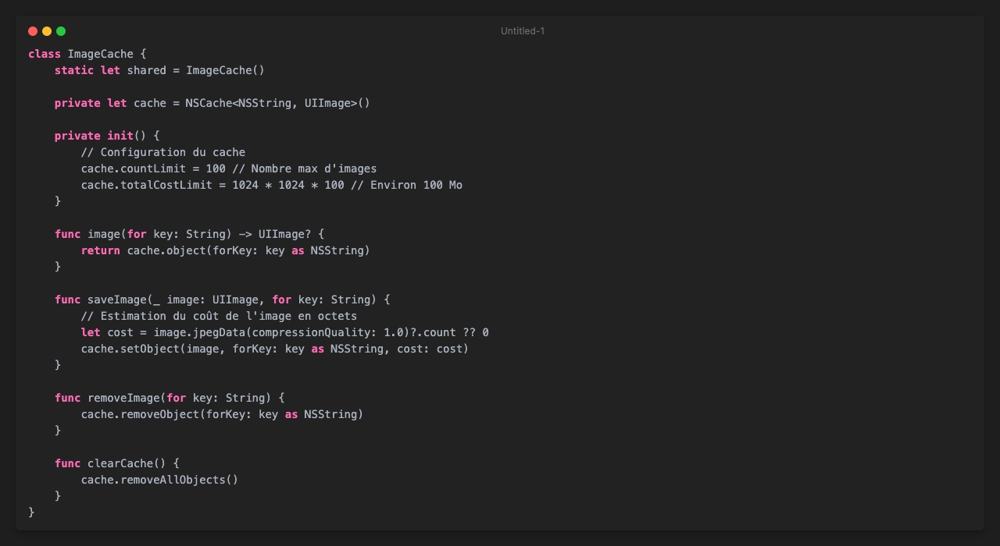
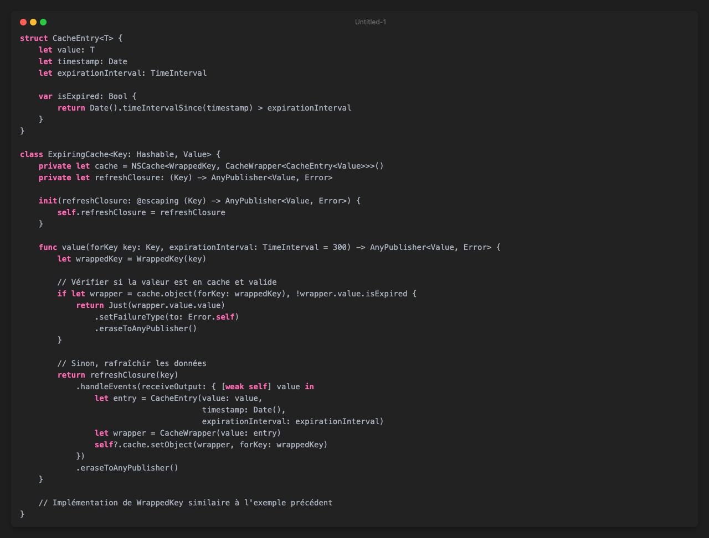
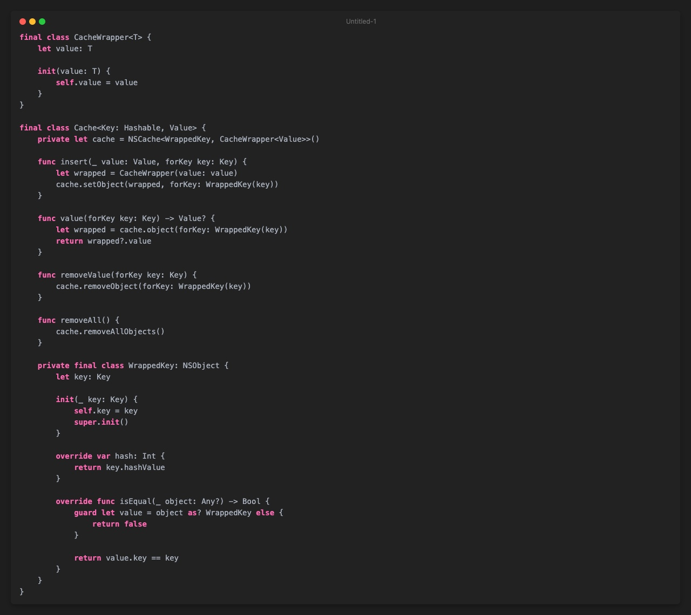
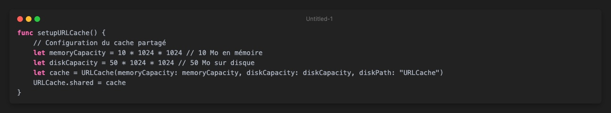
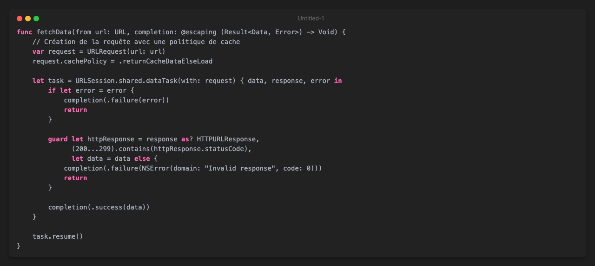
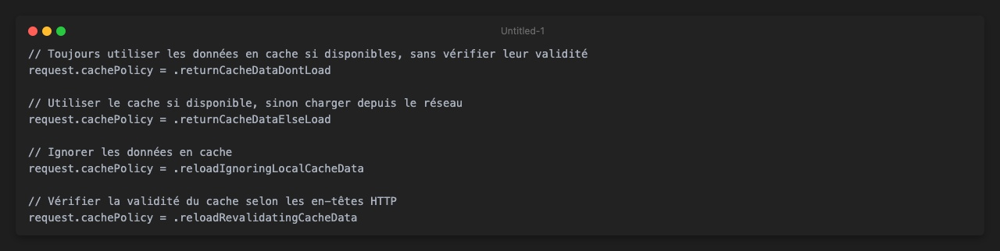
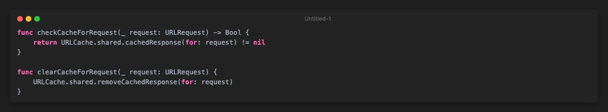
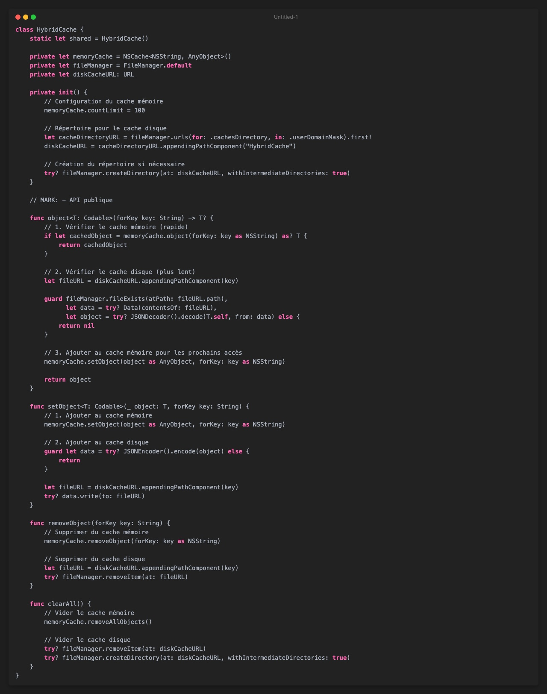
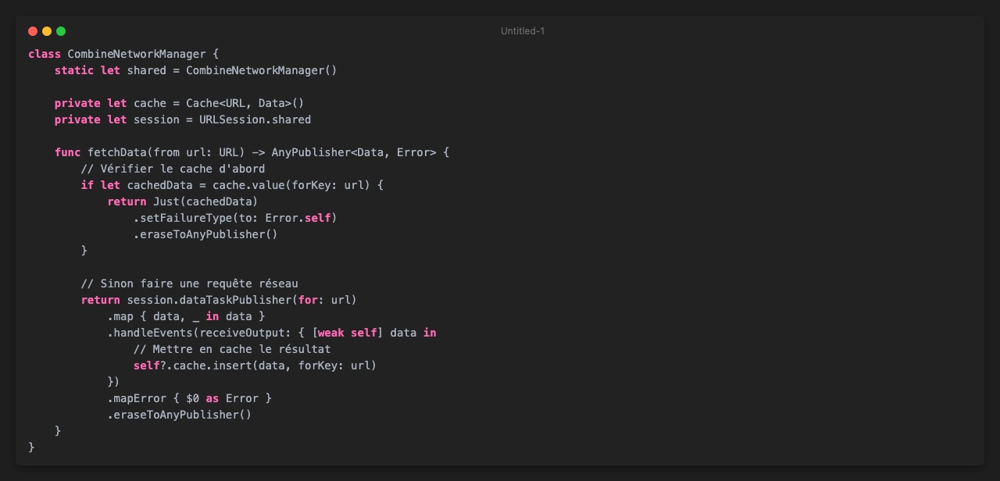
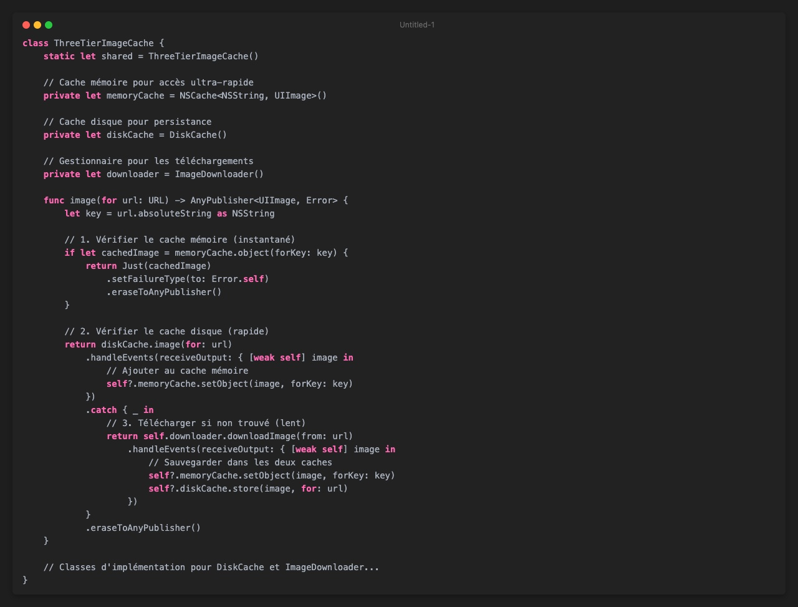

NSCache et URLCache : Stratégies de mise en cache efficaces pour iOS
La mise en cache est un élément fondamental pour développer des applications iOS performantes, réactives et économes en données. Que ce soit pour stocker temporairement des images, des réponses d'API ou des données complexes, les stratégies de mise en cache permettent d'économiser des ressources précieuses et d'améliorer considérablement l'expérience utilisateur.
Dans cet article, nous explorerons deux outils essentiels fournis par Apple pour la mise en cache : NSCache et URLCache. Nous verrons comment les utiliser de manière optimale, leurs différences fondamentales, et comment construire des stratégies de mise en cache robustes pour vos applications iOS.
Pourquoi la mise en cache est-elle cruciale ?
Avant de plonger dans les détails techniques, rappelons pourquoi la mise en cache est si importante :
- Performance : Accéder à des données en mémoire est considérablement plus rapide que de les télécharger ou les recalculer
- Expérience offline : Permettre aux utilisateurs d'accéder à certaines fonctionnalités sans connexion internet
- Économie de bande passante : Réduire la consommation de données mobiles des utilisateurs
- Réduction de la charge serveur : Diminuer le nombre de requêtes vers vos API
- Économie de batterie : Moins de requêtes réseau signifie moins de consommation énergétique
NSCache : Le champion de la mise en cache en mémoire
NSCache est une classe de Foundation spécialement conçue pour stocker temporairement des objets qui nécessitent beaucoup de ressources à créer, comme des images décodées ou des résultats de calculs complexes.
Caractéristiques clés de NSCache
Contrairement à d'autres collections comme Dictionary, NSCache présente plusieurs avantages :
- Gestion automatique de la mémoire : NSCache peut automatiquement supprimer des objets en cas de pression mémoire
- Thread-safe : Utilisable simultanément depuis différents threads sans verrouillage supplémentaire
- Éviction intelligente : Supprime automatiquement les objets les moins récemment utilisés
- Configuration flexible : Limites paramétrables sur le nombre d'objets ou la taille totale du cache
Implémentation basique d'un cache d'images
Voici comment implémenter un cache d'images simple avec NSCache :

Extension Swifty pour NSCache
NSCache est une classe Objective-C qui ne supporte que les clés NSString/NSNumber et nécessite des objets (classes) comme valeurs. Créons une extension pour le rendre plus "Swifty" :

Cette implémentation permet d'utiliser n'importe quel type Hashable comme clé et n'importe quel type comme valeur, même les structs !
URLCache : Gérer intelligemment les réponses HTTP
URLCache est spécialisé dans la mise en cache des réponses HTTP, ce qui le rend parfait pour stocker les réponses de vos API. Contrairement à NSCache, URLCache persiste les données sur le disque, les rendant disponibles entre les lancements de l'application.
Configuration d'URLCache
Une bonne pratique consiste à configurer URLCache au démarrage de votre application :

Appelez cette méthode dans votre AppDelegate ou SceneDelegate.
Utilisation d'URLCache avec URLSession
URLCache s'intègre naturellement avec URLSession pour mettre en cache les réponses HTTP :

Politiques de cache avancées
Vous pouvez contrôler finement le comportement du cache avec différentes politiques :

Vérifier et manipuler les entrées du cache
Vous pouvez vérifier si une réponse est disponible en cache :

Stratégies de mise en cache hybrides
Pour des besoins avancés, on peut combiner NSCache et URLCache dans une solution hybride :

Cette implémentation offre :
- Un cache à deux niveaux (mémoire et disque)
- Un accès très rapide pour les objets récemment utilisés (mémoire)
- Une persistance entre les lancements (disque)
- Une compatibilité avec tout type Codable
Combinaison avec Combine
Avec Combine, nous pouvons créer des pipelines de chargement de données avec mise en cache intégrée :

Stratégies avancées pour les cas d'utilisation spécifiques
Cache d'images à plusieurs niveaux
Pour les applications avec beaucoup d'images, une approche à trois niveaux peut être optimale :

Cache avec expiration et rafraîchissement périodique
Pour les données qui deviennent obsolètes avec le temps :

Bonnes pratiques et pièges à éviter
À faire
- Surveillez l'utilisation mémoire : Configurez des limites appropriées pour NSCache
- Invalidez le cache intelligemment : Évitez de tout supprimer à chaque changement mineur
- Utilisez des identifiants uniques : Évitez les collisions de clés de cache
- Gérez les erreurs gracieusement : Prévoyez des fallbacks en cas d'échec du cache
- Implémentez une stratégie de préchargement pour les données critiques
À éviter
- Mettre en cache des données sensibles sans chiffrement
- Surutiliser le cache pour des données qui changent fréquemment
- Ignorer les en-têtes de cache HTTP pour URLCache
- Bloquer le thread principal lors des opérations de cache disque
- Supposer que le cache est toujours disponible (il peut être effacé par le système)
Conclusion
Une stratégie de mise en cache bien conçue peut transformer l'expérience utilisateur de votre application iOS. NSCache et URLCache sont des outils puissants, chacun avec ses propres forces :
- NSCache excelle pour les données en mémoire temporaires avec une gestion automatique des ressources
- URLCache brille pour la persistance des réponses HTTP entre les sessions
En combinant ces outils et en adaptant vos stratégies aux besoins spécifiques de votre application, vous pouvez créer des expériences fluides et performantes, même dans des conditions réseau difficiles.
La mise en cache n'est pas un simple détail d'implémentation, mais une compétence fondamentale pour tout développeur iOS sérieux. Maîtriser ces techniques vous permettra de créer des applications qui se démarquent par leur réactivité et leur efficacité.